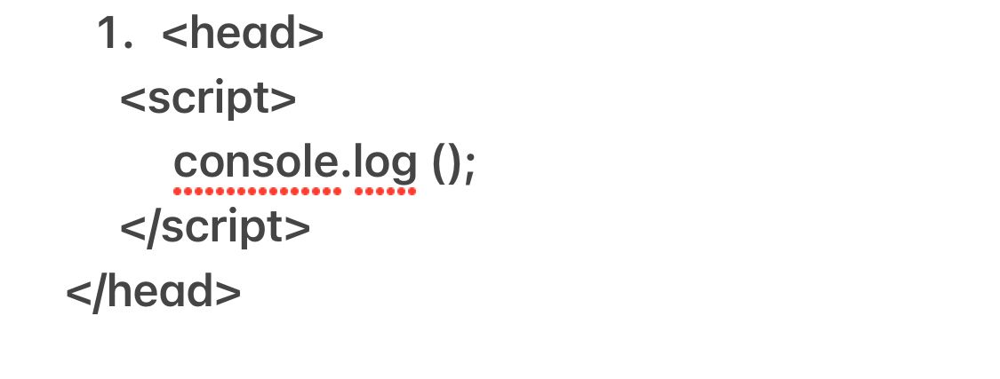
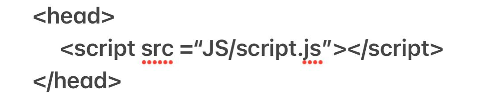
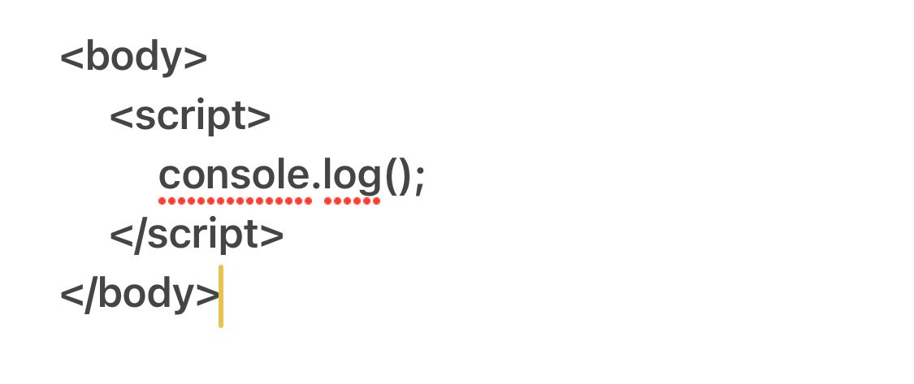
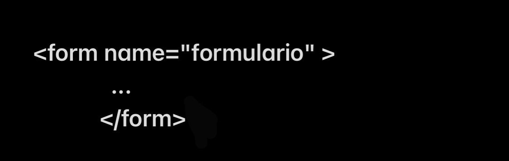
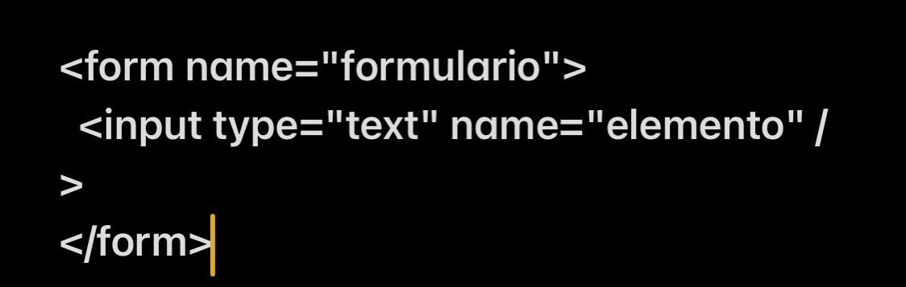
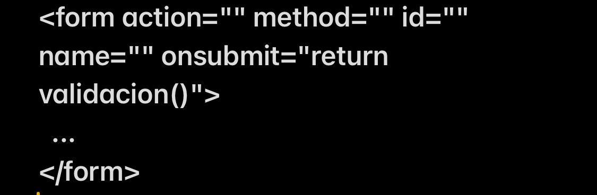
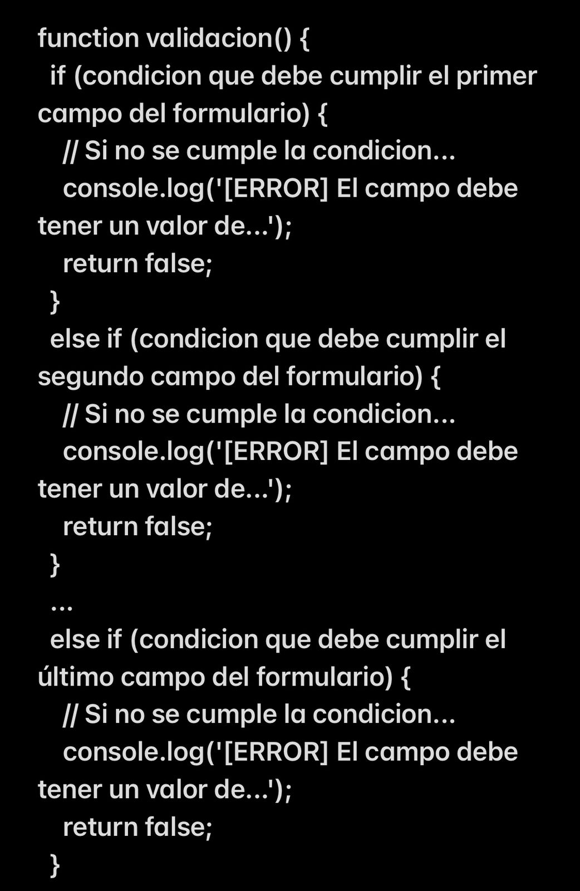
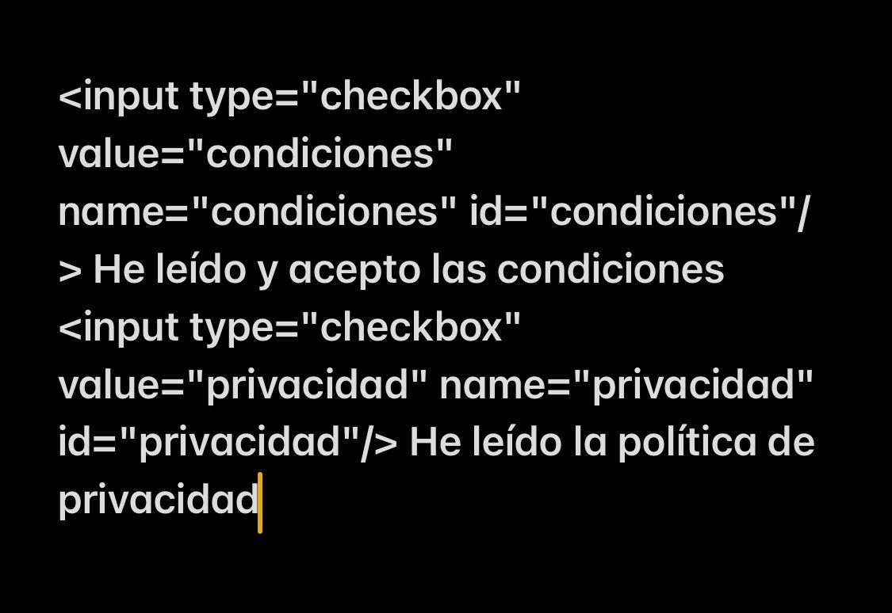
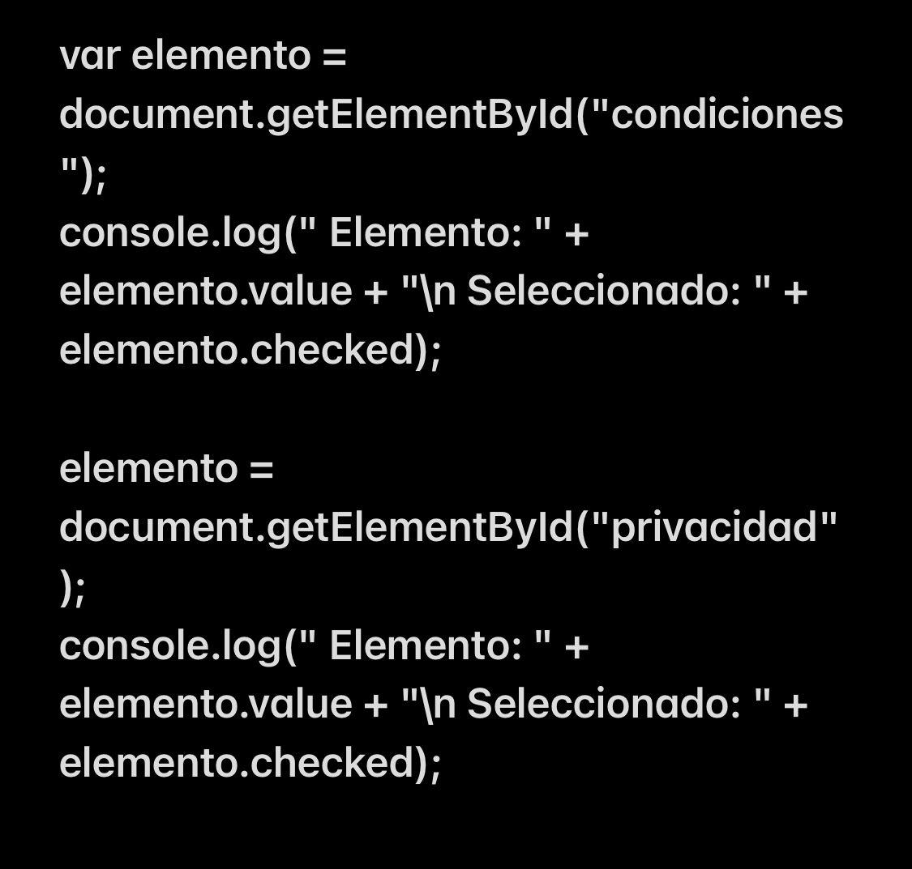

¿Qué versiones de JavaScript hay en el mercado?.
ECMAScript es una especificación de lenguaje de programación publicada por Ecma International. El desarrollo empezó en 1996 y estuvo basado en el popular lenguaje JavaScript propuesto como estándar por Netscape Communications Corporation. Actualmente está aceptado como el estándar ISO/IEC 22275:2018.
ECMAScript define un lenguaje de tipos dinámicos ligeramente inspirado en Java y otros lenguajes del estilo de C. Soporta algunas características de la programación orientada a objetos mediante objetos basados en prototipos y pseudoclases.
Sus eventos importantes son:
1950 → Inicio de las computadoras 1969 → Se creo la red ARPANET, 1970-1990 → Se explora ARPANET 1990 → Tim Berners-lee presento lo que hoy conocemos como internet. Se conoció el término World Wide Web (forma de acceder a documentos, archivos y enlaces al alcance de todos) 1993 → Nacimiento de un Navegador. Marc Andreessen: le dio vida a una gran empresa Netscape. Creo un navegador que podía acceder a internet (HTML simple, enlaces, algunas fotografías)
Browser wars: Guerra de los navegadores Debido a la popularidad de Netscape, Microsoft en 1995 lanzó Internet Explorer. Debido a esta guerra nacieron tecnologías como CSS (propuesta de Microsoft para hacer temas a nivel de interfaz), conceptos como la empresa Mozilla y JavaScript.
En el año 1995, dentro de Netscape gracias a Brendan Eich nació el lenguaje Javascript. En su inicio fue llamado Mocha, para después cambiar su nombre por LiveScript y finalmente termino siendo JavaScript por la popularidad del lenguaje Java.
Debito a esto, Microsoft lazó su propio lenguaje para su navegador, JScript. Así es como nacé, ECMAScript (1997). ECMAScript es un consorcio Europeo que permitió generar un estándar para que los navegadores lo siguieran.
JavaScript 1.0: Navegador 2.0
JavaScript 1.1: Navegador 3.0
JavaScript 1.2: Navegador 4.0-4.05
JavaScript 1.3: Navegador 4.06-4.7x
JavaScript 1.4: n/a
JavaScript 1.5: Navegador 6.0, Mozilla 0.6x-0.9x (navegador de código abierto)
JavaScript 1.6: Mozilla Firefox 1.5
JavaScript 1.7: Mozilla Firefox 2
¿Cómo se integra JavaScript a HTML?.
Hay tres formas de enlazar JavaScript con HTML
1) Dentro de la etiqueta head en html hay dos formas:

2)

3)Dentro de la etiqueta body, enlazamos de esta manera:

¿Cómo es el manejo de las variables, tipos de datos y expresiones regulares en JS?.
Variables:
Utiliza variables como nombres simbólicos para valores. Los nombres de las variables, llamados identificadores, se ajustan a ciertas reglas. Un identificador de JavaScript debe comenzar con una letra, un guión bajo ( _ ) o un signo de dólar ( $ ).
¿Cómo son todas las formas de declaración de funciones en JS?.
Function declaration
Function expression
IIFE (Immediately Invoked Function Expression)
Shorthand method definition
Arrow function
Generator function
Function constructor
¿Cuáles son los operadores y conversión entre tipos?.
Los operadores serian:
Operadores de despacho
Operadores de comparación
Operadores aritméticos
Operadores un poco
Operadores lógicos
operadores de cadena
Operador condicional
operador coma
operadores unarios
operadores relacionales
Los tipos de conversiones son dos que son la implícita y la explícita: En la implícita se convierte un tipo de dato de menor rango a un supertipo (tipo de dato de mayor rango); este tipo de conversión lo realiza el compilador, ya que no hay pérdida de datos si, por ejemplo, se pasa un int (tipo entero) a long.
¿Cuáles son las estructura de control de JS?.
Las estructuras de control de flujo, son intrucciones que nos permiten evaluar si se puede cumplir una condición o no, incluso nos puede ayudar a evaluarla n cantidad de veces.
¿Qué es el objeto dom en JS? Y ¿Cómo trabaja?.
El modelo de objeto de documento (DOM) es una interfaz de programación para los documentos HTML y. Facilita una representación estructurada del documento y define de qué manera los programas pueden acceder, al fin de modificar, tanto su estructura, estilo y contenido.
El DOM representa un documento HTML completo como un solo objeto. Para crear el DOM, el navegador web que lee el archivo HTML toma todas sus partes, desde el elemento raíz hasta las etiquetas más pequeñas, y las devuelve como un objeto que el JavaScript comprende.
¿Qué función tiene en JS el Object Map?.
El método map() crea un nuevo array con los resultados de la llamada a la función indicada aplicados a cada uno de sus elementos.
¿Cuáles son todos los eventos que trabaja JS?.
abort (onabort)
blur (onblur)
change (onchange)
click (onclick)
dragdrop (ondragdrop)
error (onerror)
focus (onfocus)
keydown (onkeydown
Propiedades para un formulario JS
JavaScript dispone de numerosas propiedades y funciones que facilitan la programación de aplicaciones que manejan formularios. En primer lugar, cuando se carga una página web, el navegador crea automáticamente un array llamado forms y que contiene la referencia a todos los formularios de la página.
Para acceder al array forms, se utiliza el objeto document, por lo que document.forms es el array que contiene todos los formularios de la página. Como se trata de un array, el acceso a cada formulario se realiza con la misma sintaxis de los arrays. La siguiente instrucción accede al primer formulario de la página:
document.forms[0];
Además del array de formularios, el navegador crea automáticamente un array llamado elements por cada uno de los formularios de la página. Cada array elements contiene la referencia a todos los elementos (cuadros de texto, botones, listas desplegables, etc.) de ese formulario. Utilizando la sintaxis de los arrays, la siguiente instrucción obtiene el primer elemento del primer formulario de la página:
document.forms[0].elements[0];
La sintaxis de los arrays no siempre es tan concisa. El siguiente ejemplo muestra cómo obtener directamente el último elemento del primer formulario de la página:
document.forms[0].elements[document.forms[0].elements.length-1];
En un entorno tan cambiante como el diseño web, es muy difícil confiar en que el orden de los formularios se mantenga estable en una página web. Por este motivo, siempre debería evitarse el acceso a los formularios de una página mediante el array document.forms.
Una forma de evitar los problemas del método anterior consiste en acceder a los formularios de una página a través de su nombre (atributo name) o a través de su atributo id. El objeto document permite acceder directamente a cualquier formulario mediante su atributo name:
"var formularioPrincipal = document.formulario;
var formularioSecundario = document.otro_formulario;

Accediendo de esta forma a los formularios de la página, el script funciona correctamente aunque se reordenen los formularios o se añadan nuevos formularios a la página. Los elementos de los formularios también se pueden acceder directamente mediante su atributo name:
var formularioPrincipal = document.formulario;
var primerElemento = document.formulario.elemento;

La validación de un formulario consiste en llamar a una función de validación cuando el usuario pulsa sobre el botón de envío del formulario. En esta función, se comprueban si los valores que ha introducido el usuario cumplen las restricciones impuestas por la aplicación.
A continuación se muestra el código JavaScript básico necesario para incorporar la validación a un formulario:

Y el esquema de la función validacion() es el siguiente: Utilizando la propiedad checked, es posible comprobar si cada checkbox ha sido seleccionado:

Si se dispone de los siguientes checkbox:

Utilizando la propiedad checked, es posible comprobar si cada checkbox ha sido seleccionado:
